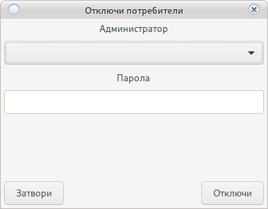

Вход в системата
Основен прозорец за вход в системата. Избира се потребител от падащото меню и се въвежда парола. Не се показват неактивни потребители.
По подразбиране:
- Потребител root
- Парола 123456
Фиг.1

Промяна на казино и добавяне на ново
Погледнете Промяна на сървър
Промяна на начина на вход
Вход с карта Изисква активен RFID четец
От бутона се "Вход с Карта" променя начина на вход в системата (от стандартен с парола към вход с карта)
Погледни Настройки/Системни/Принтери и Картов четец
При избор на вход с карта, всеки потребител влязъл веднъж по този начин ще загуби възможност да влиза с парола ако системата е настроена за вход веднъж. На екрана ще излезе съобщение.
За отключване погледни
Отключване на заключен потребител

Отключване на заключен потребител
При активна настройка за вход веднъж може да се покаже съобщение от Фиг.2
Това означава, че потребителя е влязъл в системата от друга програма или в редки случаи програмата е неправилно затворена.
Фиг.2
Използвайте бутон CTRL+q след това ще се покаже прозорец Фиг.3 за отключване на потребителя.
Трябва да бъде избран потребител с права за отключване. Това действие ще отключи всички заключени потребители.
Фиг.3

Рестарт на сървъра отключва всички потребители.
Рестарт на сървъра изхвърля всички потребители.
Регистрация на POS Терминал
Регистрация на работна станция
Лицензиране
Съобщения
-
Не регистриран POS.
- Собственика е отнел правата на компютъра да се свързва с казиното
- Компютъра е нов пос терминал.
- Операционната система е преинсталирана или има промяна в дяловете на системата
Системата може да бъде регистриран от потребител с права.
-
Невалиден базов лиценз
- Системата е нова
- Лиценза е изтекъл
- Лиценза е отнет принудително (при опит за промяна в кода на системата)
Моля свържете се с администратор за подновяване на лиценз.
При принудително отнет лиценз, подновяване е невъзможно.
-
Изтичащ лиценз
- Някой от регистрираните лицензи е с изтичаща валидност.
Свържете се с администратор в рамките на 10 дена.
Погледни -
Грешна парола
- Системата разпознава малки и главни букви
- Погледнете езика за въвеждане
- Свържете се с потребител с права за промяна на паролата
След промяна на паролата от друг потребител в основния панел натиснете ctrl+p за да изберете нова парола.